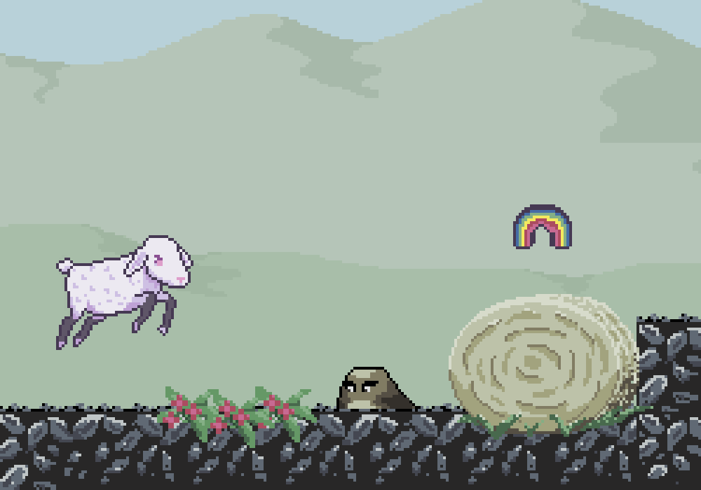
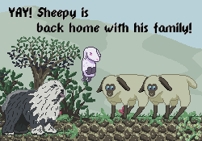

In this short, child-friendly platformer, you play as Sheepy, a young lamb who has gotten separated from his flock. Travel across prairies and through mountains to get home, and back to your family.
There are mud slimes and hay slimes to avoid or fight, and rainbows to collect. It's possible to get through both levels without fighting.
Speedruns
This game has acqiured a small speed-run following, in the non-violent mode.Some updates have been made since these speedruns were done, fixing some issues.
Sheepy Speedrun, by Orange Deer Gaming
It's free to download, and there are no in-game transactions.
If you're playing on Steam, there are two achievements possible: one to collect all the rainbows, and one to not kill any slimes.
